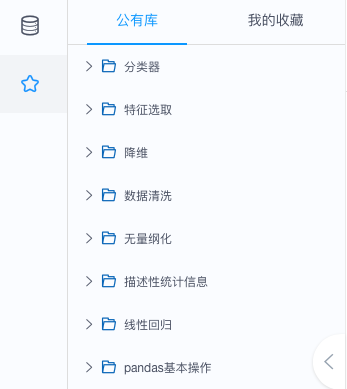
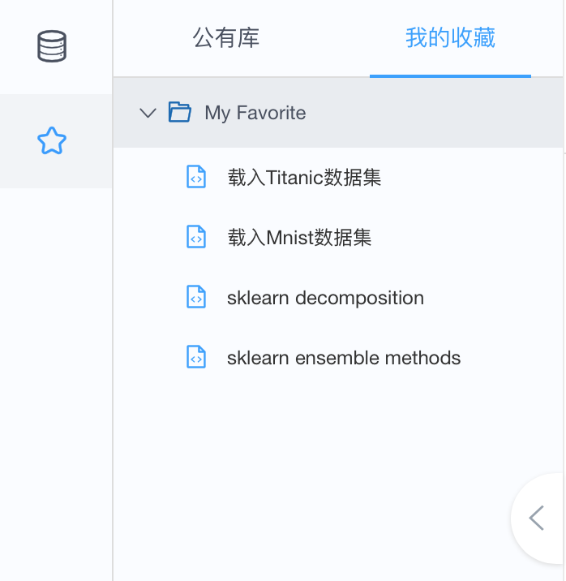

<!DOCTYPE HTML>
<html lang="" >
    <head>
        <meta charset="UTF-8">
        <meta content="text/html; charset=utf-8" http-equiv="Content-Type">
        <title>侧边栏 · GitBook</title>
        <meta http-equiv="X-UA-Compatible" content="IE=edge" />
        <meta name="description" content="">
        <meta name="generator" content="GitBook 3.2.3">
        
        
        
    
    <link rel="stylesheet" href="../gitbook/style.css">

    
            
                
                <link rel="stylesheet" href="../gitbook/gitbook-plugin-highlight/website.css">
                
            
                
                <link rel="stylesheet" href="../gitbook/gitbook-plugin-search/search.css">
                
            
                
                <link rel="stylesheet" href="../gitbook/gitbook-plugin-fontsettings/website.css">
                
            
        

    

    
        
    
        
    
        
    
        
    
        
    
        
    

        
    
    
    <meta name="HandheldFriendly" content="true"/>
    <meta name="viewport" content="width=device-width, initial-scale=1, user-scalable=no">
    <meta name="apple-mobile-web-app-capable" content="yes">
    <meta name="apple-mobile-web-app-status-bar-style" content="black">
    <link rel="apple-touch-icon-precomposed" sizes="152x152" href="../gitbook/images/apple-touch-icon-precomposed-152.png">
    <link rel="shortcut icon" href="../gitbook/images/favicon.ico" type="image/x-icon">

    
    <link rel="next" href="monitor.html" />
    
    
    <link rel="prev" href="markdown_cell.html" />
    

    </head>
    <body>
        
<div class="book">
    <div class="book-summary">
        
            
<div id="book-search-input" role="search">
    <input type="text" placeholder="Type to search" />
</div>

            
                <nav role="navigation">
                


<ul class="summary">
    
    

    

    
        
        
    
        <li class="chapter " data-level="1.1" data-path="../">
            
                <a href="../">
            
                    
                    K-Lab组织版管理员手册
            
                </a>
            

            
        </li>
    
        <li class="chapter " data-level="1.2" data-path="chapter1.html">
            
                <a href="chapter1.html">
            
                    
                    Notebook(编程环境)
            
                </a>
            

            
            <ul class="articles">
                
    
        <li class="chapter " data-level="1.2.1" data-path="header.html">
            
                <a href="header.html">
            
                    
                    Header
            
                </a>
            

            
        </li>
    
        <li class="chapter " data-level="1.2.2" data-path="code_cell.html">
            
                <a href="code_cell.html">
            
                    
                    Code Cell
            
                </a>
            

            
        </li>
    
        <li class="chapter " data-level="1.2.3" data-path="markdown_cell.html">
            
                <a href="markdown_cell.html">
            
                    
                    Markdown Cell
            
                </a>
            

            
        </li>
    
        <li class="chapter active" data-level="1.2.4" data-path="side_bar.html">
            
                <a href="side_bar.html">
            
                    
                    侧边栏
            
                </a>
            

            
        </li>
    
        <li class="chapter " data-level="1.2.5" data-path="monitor.html">
            
                <a href="monitor.html">
            
                    
                    监控区
            
                </a>
            

            
        </li>
    

            </ul>
            
        </li>
    
        <li class="chapter " data-level="1.3" data-path="../ch2/chapter2.html">
            
                <a href="../ch2/chapter2.html">
            
                    
                    Kernel(计算环境)
            
                </a>
            

            
            <ul class="articles">
                
    
        <li class="chapter " data-level="1.3.1" data-path="../ch2/kernel_type.html">
            
                <a href="../ch2/kernel_type.html">
            
                    
                    Kernel类型
            
                </a>
            

            
        </li>
    
        <li class="chapter " data-level="1.3.2" data-path="../ch2/kernel_pkg.html">
            
                <a href="../ch2/kernel_pkg.html">
            
                    
                    Kernel内置工具包
            
                </a>
            

            
        </li>
    
        <li class="chapter " data-level="1.3.3" data-path="../ch2/kernel_computing_source.html">
            
                <a href="../ch2/kernel_computing_source.html">
            
                    
                    Kernel计算资源
            
                </a>
            

            
        </li>
    

            </ul>
            
        </li>
    
        <li class="chapter " data-level="1.4" data-path="../ch3/chapter3.html">
            
                <a href="../ch3/chapter3.html">
            
                    
                    磁盘空间
            
                </a>
            

            
            <ul class="articles">
                
    
        <li class="chapter " data-level="1.4.1" data-path="../ch3/access.html">
            
                <a href="../ch3/access.html">
            
                    
                    个人工作区
            
                </a>
            

            
        </li>
    
        <li class="chapter " data-level="1.4.2" data-path="../ch3/input_directory.html">
            
                <a href="../ch3/input_directory.html">
            
                    
                    数据集挂载目录
            
                </a>
            

            
        </li>
    
        <li class="chapter " data-level="1.4.3" data-path="../ch3/command_line.html">
            
                <a href="../ch3/command_line.html">
            
                    
                    常用文件操作命令
            
                </a>
            

            
        </li>
    

            </ul>
            
        </li>
    
        <li class="chapter " data-level="1.5" data-path="../ch4/chapter4.html">
            
                <a href="../ch4/chapter4.html">
            
                    
                    数据集
            
                </a>
            

            
            <ul class="articles">
                
    
        <li class="chapter " data-level="1.5.1" data-path="../ch4/create_dataset.html">
            
                <a href="../ch4/create_dataset.html">
            
                    
                    创建数据集
            
                </a>
            

            
        </li>
    
        <li class="chapter " data-level="1.5.2" data-path="../ch4/upload_dataset.html">
            
                <a href="../ch4/upload_dataset.html">
            
                    
                    挂载数据集
            
                </a>
            

            
        </li>
    
        <li class="chapter " data-level="1.5.3" data-path="../ch4/authority_dataset.html">
            
                <a href="../ch4/authority_dataset.html">
            
                    
                    数据集权限
            
                </a>
            

            
        </li>
    
        <li class="chapter " data-level="1.5.4" data-path="../ch4/manage_dataset.html">
            
                <a href="../ch4/manage_dataset.html">
            
                    
                    管理数据集
            
                </a>
            

            
        </li>
    

            </ul>
            
        </li>
    
        <li class="chapter " data-level="1.6" data-path="../ch5/chapter5.html">
            
                <a href="../ch5/chapter5.html">
            
                    
                    数据分析项目
            
                </a>
            

            
            <ul class="articles">
                
    
        <li class="chapter " data-level="1.6.1" data-path="../ch5/create_lab.html">
            
                <a href="../ch5/create_lab.html">
            
                    
                    创建项目
            
                </a>
            

            
        </li>
    
        <li class="chapter " data-level="1.6.2" data-path="../ch5/manage_lab.html">
            
                <a href="../ch5/manage_lab.html">
            
                    
                    管理项目
            
                </a>
            

            
        </li>
    
        <li class="chapter " data-level="1.6.3" data-path="../ch5/version_lab.html">
            
                <a href="../ch5/version_lab.html">
            
                    
                    项目版本
            
                </a>
            

            
        </li>
    
        <li class="chapter " data-level="1.6.4" data-path="../ch5/fork_lab.html">
            
                <a href="../ch5/fork_lab.html">
            
                    
                    Fork项目
            
                </a>
            

            
        </li>
    

            </ul>
            
        </li>
    
        <li class="chapter " data-level="1.7" data-path="../ch6/chapter6.html">
            
                <a href="../ch6/chapter6.html">
            
                    
                    K-Lab快捷键
            
                </a>
            

            
        </li>
    
        <li class="chapter " data-level="1.8" data-path="../ch7/chapter7.html">
            
                <a href="../ch7/chapter7.html">
            
                    
                    组织管理
            
                </a>
            

            
            <ul class="articles">
                
    
        <li class="chapter " data-level="1.8.1" data-path="../ch7/content_manage.html">
            
                <a href="../ch7/content_manage.html">
            
                    
                    内容管理
            
                </a>
            

            
        </li>
    
        <li class="chapter " data-level="1.8.2" data-path="../ch7/tag_magage.html">
            
                <a href="../ch7/tag_magage.html">
            
                    
                    标签管理
            
                </a>
            

            
        </li>
    
        <li class="chapter " data-level="1.8.3" data-path="../ch7/member_info.html">
            
                <a href="../ch7/member_info.html">
            
                    
                    人员信息
            
                </a>
            

            
        </li>
    
        <li class="chapter " data-level="1.8.4" data-path="../ch7/group_info.html">
            
                <a href="../ch7/group_info.html">
            
                    
                    组织信息
            
                </a>
            

            
        </li>
    

            </ul>
            
        </li>
    
        <li class="chapter " data-level="1.9" data-path="../ch8/chapter8.html">
            
                <a href="../ch8/chapter8.html">
            
                    
                    K-Lab工具包
            
                </a>
            

            
            <ul class="articles">
                
    
        <li class="chapter " data-level="1.9.1" data-path="../ch8/py3.html">
            
                <a href="../ch8/py3.html">
            
                    
                    Py3工具包
            
                </a>
            

            
        </li>
    
        <li class="chapter " data-level="1.9.2" data-path="../ch8/py2.html">
            
                <a href="../ch8/py2.html">
            
                    
                    Py2工具包
            
                </a>
            

            
        </li>
    
        <li class="chapter " data-level="1.9.3" data-path="../ch8/r.html">
            
                <a href="../ch8/r.html">
            
                    
                    R工具包
            
                </a>
            

            
        </li>
    

            </ul>
            
        </li>
    

    

    <li class="divider"></li>

    <li>
        <a href="https://www.gitbook.com" target="blank" class="gitbook-link">
            Published with GitBook
        </a>
    </li>
</ul>


                </nav>
            
        
    </div>

    <div class="book-body">
        
            <div class="body-inner">
                
                    

<div class="book-header" role="navigation">
    

    <!-- Title -->
    <h1>
        <i class="fa fa-circle-o-notch fa-spin"></i>
        <a href=".." >侧边栏</a>
    </h1>
</div>


                    <div class="page-wrapper" tabindex="-1" role="main">
                        <div class="page-inner">
                            
<div id="book-search-results">
    <div class="search-noresults">
    
                                <section class="normal markdown-section">
                                
                                <h1 id="&#x4FA7;&#x8FB9;&#x680F;">&#x4FA7;&#x8FB9;&#x680F;</h1>
<p>K-Lab Notebook&#x4FA7;&#x8FB9;&#x680F;&#x5305;&#x542B;&#x6570;&#x636E;&#x6587;&#x4EF6;&#x76EE;&#x5F55;&#x4E0E;&#x4EE3;&#x7801;&#x7247;&#x6BB5;&#x4E24;&#x4E2A;&#x7EC4;&#x4EF6;&#x3002;</p>
<h3 id="&#x6570;&#x636E;&#x6587;&#x4EF6;&#x76EE;&#x5F55;">&#x6570;&#x636E;&#x6587;&#x4EF6;&#x76EE;&#x5F55;</h3>
<p>&#x5F53;&#x524D;&#x9879;&#x76EE;&#x6302;&#x8F7D;&#x7684;&#x6570;&#x636E;&#x96C6;&#x4FE1;&#x606F;&#x53EF;&#x4EE5;&#x5728;&#x6587;&#x4EF6;&#x76EE;&#x5F55;&#x67E5;&#x770B;&#xFF0C;&#x5E76;&#x652F;&#x6301;csv&#x4E0E;zip&#x683C;&#x5F0F;&#x7684;&#x6587;&#x4EF6;&#x5185;&#x5BB9;&#x9884;&#x89C8;&#x3002;
</p>
<h3 id="&#x4EE3;&#x7801;&#x7247;&#x6BB5;">&#x4EE3;&#x7801;&#x7247;&#x6BB5;</h3>
<p>K-Lab&#x63D0;&#x4F9B;&#x4EE3;&#x7801;&#x7247;&#x6BB5;&#x529F;&#x80FD;&#x6765;&#x63D0;&#x5347;&#x7528;&#x6237;&#x7684;&#x7F16;&#x7A0B;&#x6548;&#x7387;&#xFF0C;&#x7528;&#x6237;&#x53EF;&#x4EE5;&#x5728;&#x8BE5;&#x533A;&#x57DF;&#x8FDB;&#x4EBA;&#x6570;&#x636E;&#x5206;&#x6790;&#x5E38;&#x7528;&#x4EE3;&#x7801;&#x77E5;&#x8BC6;&#x5E93;&#x7684;&#x6574;&#x7406;&#xFF0C;&#x5E76;&#x5728;&#x7F16;&#x5199;&#x4EE3;&#x7801;&#x65F6;&#x5FEB;&#x901F;&#x63D2;&#x5165;&#x4F7F;&#x7528;&#x3002;&#x4EE3;&#x7801;&#x7247;&#x6BB5;&#x5206;&#x4E3A;<strong>&#x516C;&#x6709;&#x5E93;</strong>&#x548C;<strong>&#x6211;&#x7684;&#x6536;&#x85CF;</strong>&#x3002;</p>
<ul>
<li>&#x516C;&#x6709;&#x5E93;&#xFF1A;&#x516C;&#x6709;&#x5E93;&#x4E3A;&#x5B98;&#x65B9;&#x9884;&#x7F6E;&#x7684;&#x6570;&#x636E;&#x5206;&#x6790;&#x3001;&#x673A;&#x5668;&#x5B66;&#x4E60;&#x7684;&#x5E38;&#x7528;&#x4EE3;&#x7801;&#x3002;<br></li>
</ul>
<ul>
<li>&#x6211;&#x7684;&#x6536;&#x85CF;&#xFF1A;&#x7528;&#x6237;&#x5728;code cell&#x6536;&#x85CF;&#x7684;&#x7684;&#x4EE3;&#x7801;&#x7247;&#x6BB5;&#x5C06;&#x5728;&#x8BE5;&#x533A;&#x57DF;&#x5448;&#x73B0;&#x3002;
</li>
</ul>

                                
                                </section>
                            
    </div>
    <div class="search-results">
        <div class="has-results">
            
            <h1 class="search-results-title"><span class='search-results-count'></span> results matching "<span class='search-query'></span>"</h1>
            <ul class="search-results-list"></ul>
            
        </div>
        <div class="no-results">
            
            <h1 class="search-results-title">No results matching "<span class='search-query'></span>"</h1>
            
        </div>
    </div>
</div>

                        </div>
                    </div>
                
            </div>

            
                
                <a href="markdown_cell.html" class="navigation navigation-prev " aria-label="Previous page: Markdown Cell">
                    <i class="fa fa-angle-left"></i>
                </a>
                
                
                <a href="monitor.html" class="navigation navigation-next " aria-label="Next page: 监控区">
                    <i class="fa fa-angle-right"></i>
                </a>
                
            
        
    </div>

    <script>
        var gitbook = gitbook || [];
        gitbook.push(function() {
            gitbook.page.hasChanged({"page":{"title":"侧边栏","level":"1.2.4","depth":2,"next":{"title":"监控区","level":"1.2.5","depth":2,"path":"ch1/monitor.md","ref":"ch1/monitor.md","articles":[]},"previous":{"title":"Markdown Cell","level":"1.2.3","depth":2,"path":"ch1/markdown_cell.md","ref":"ch1/markdown_cell.md","articles":[]},"dir":"ltr"},"config":{"gitbook":"*","theme":"default","variables":{},"plugins":["livereload"],"pluginsConfig":{"livereload":{},"highlight":{},"search":{},"lunr":{"maxIndexSize":1000000,"ignoreSpecialCharacters":false},"sharing":{"facebook":true,"twitter":true,"google":false,"weibo":false,"instapaper":false,"vk":false,"all":["facebook","google","twitter","weibo","instapaper"]},"fontsettings":{"theme":"white","family":"sans","size":2},"theme-default":{"styles":{"website":"styles/website.css","pdf":"styles/pdf.css","epub":"styles/epub.css","mobi":"styles/mobi.css","ebook":"styles/ebook.css","print":"styles/print.css"},"showLevel":false}},"structure":{"langs":"LANGS.md","readme":"README.md","glossary":"GLOSSARY.md","summary":"SUMMARY.md"},"pdf":{"pageNumbers":true,"fontSize":12,"fontFamily":"Arial","paperSize":"a4","chapterMark":"pagebreak","pageBreaksBefore":"/","margin":{"right":62,"left":62,"top":56,"bottom":56}},"styles":{"website":"styles/website.css","pdf":"styles/pdf.css","epub":"styles/epub.css","mobi":"styles/mobi.css","ebook":"styles/ebook.css","print":"styles/print.css"}},"file":{"path":"ch1/side_bar.md","mtime":"2018-04-24T02:09:30.000Z","type":"markdown"},"gitbook":{"version":"3.2.3","time":"2018-06-07T02:13:44.861Z"},"basePath":"..","book":{"language":""}});
        });
    </script>
</div>

        
    <script src="../gitbook/gitbook.js"></script>
    <script src="../gitbook/theme.js"></script>
    
        
        <script src="../gitbook/gitbook-plugin-livereload/plugin.js"></script>
        
    
        
        <script src="../gitbook/gitbook-plugin-search/search-engine.js"></script>
        
    
        
        <script src="../gitbook/gitbook-plugin-search/search.js"></script>
        
    
        
        <script src="../gitbook/gitbook-plugin-lunr/lunr.min.js"></script>
        
    
        
        <script src="../gitbook/gitbook-plugin-lunr/search-lunr.js"></script>
        
    
        
        <script src="../gitbook/gitbook-plugin-sharing/buttons.js"></script>
        
    
        
        <script src="../gitbook/gitbook-plugin-fontsettings/fontsettings.js"></script>
        
    

    </body>
</html>

